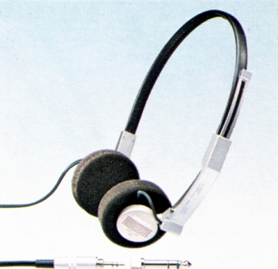
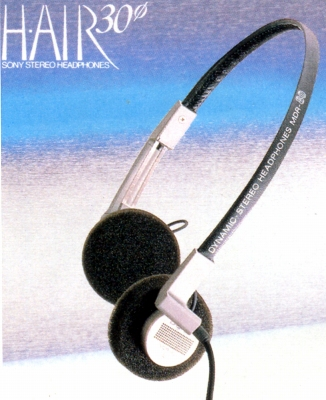
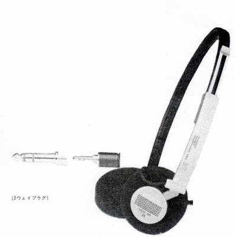
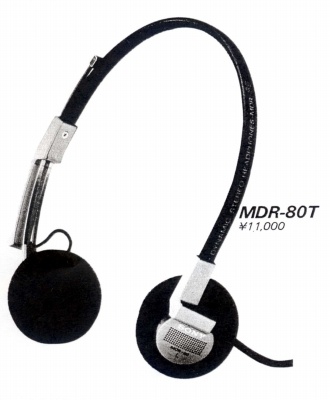
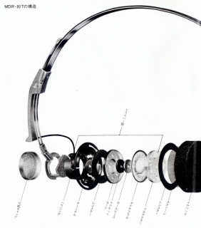
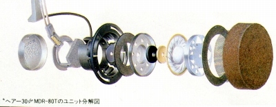

MDR-80T




 


■価格 11,000円■型式 オープンエアダイナミック型■振動板 30�oドーム型■インピーダンス 45Ω■再生周波数帯域 16-24,000Hz■許容入力 100mW■感度 101ｄB/mW■コード 3ｍ ステレオミニプラグ/6.3mmアダプター付属■重量 60g（コード含まず）■発売 1981年10月■販売終了 1984年頃■備考
ソニーのインデックスへ